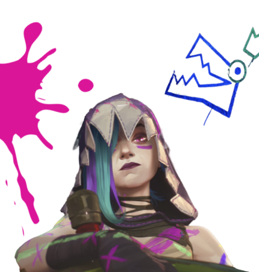

아케인 시즌2 요약

징크스가 의회에 가한 공격은 필트오버와 자운 사이의
분쟁이 심화되는 기반을 다져 주었습니다.
징크스
징크스는 두 가지 정체성으로 찢어졌습니다.
실코의 손에 길러진 굳세고 강력한 딸과, 바이의 보호를 받는 겁이 많고 약한 여동생입니다.
이제, 자신이 바이가 창조한 괴물이라는 것을 받아들인 징크스는 빈 껍데기가 되었습니다.
모든 것을 망치는 저주받은 ‘징크스’가 된 것입니다.
바이
바이는 해야만 하는 일을 하고자 합니다.
바로 자신이 창조한 괴물인 징크스를 처리하는 것입니다.
여동생이 얼마나 위험한 인물인지 아는 바이는 케이틀린과 한 팀이 되고
집행자 배지를 옷에 붙이라는 케이틀린의 요청을 수락합니다.
케이틀린
케이틀린은 필트오버의 집행자입니다.
한때 뛰어난 조사 실력을 바탕으로 자운과 필트오버 내 부패의 핵심을 밝히곤 했으나,
징크스가 의회에 가한 공격 이후 케이틀린은 평화를 이룰 수 있다는 희망을 버렸습니다.
에코
에코는 새로운 보금자리를 짓고
이를 지키고자 싸우는 자운인 무리인 점화단을 이끕니다.
하이머딩거와 예상치 못하게 친구 사이가 된 에코는
함께 자운을 더 좋은 곳으로 만들고자 노력합니다.
하이머딩거
하이머딩거는 필트오버 의회에 실질적인 안전장치 없이 마법을 사용하는 데 따르는
위험에 관해 경고했습니다. 제이스와 있었을 때 한 실수를 교훈으로 삼아
하이머딩거는 단지 조언만 하는 게 아니라 계속해서 에코가
해결법을 찾을 수 있게 도와주고 문제를 해결하기 위해 에코와 함께 작업합니다.
제이스
일련의 사건 이후 제이스는 마법공학을 필트오버인의 삶을 개선하는 데 사용한다는
비전에 의문을 품게 되었습니다. 한편 제이스는 하이머딩거, 에코와 함께 마법공학 남용으로
지하도시가 병들어가고 있다는 사실을 발견합니다.
조사를 이어 나가던 그들은 더 큰 무언가와 마주하게 됩니다.
한국 아케인 팬분들을 위해 준비한 특별한 아케인의 여정에 초대합니다.
아케인 시즌 2 특별 팝업 행사
2024.11.8 ~ 2024.11.17
서울시 서초구 신반포로 176 1F, 오픈 스테이지
장소
신세계 강남점 오픈 스테이지
이벤트 참여 안내
다양한 체험을 즐기고 경품 받아가세요!